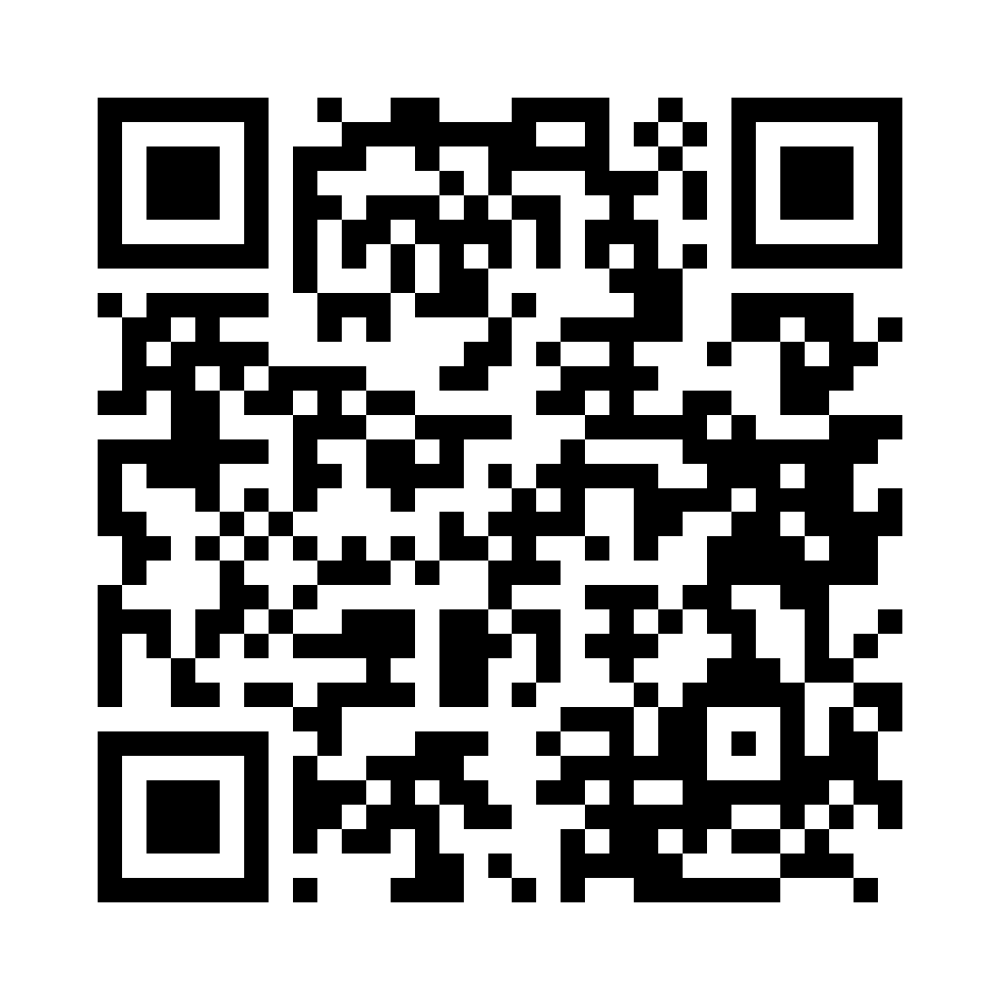

UTFPR · Pato Branco
Carregando mapa…
Ative o JavaScript para visualizar o mapa interativo.
LEVE O MAPA COM VOCÊ

O Bing exige uma chave Enterprise válida. Use uma chave autorizada para este site. Ela será usada apenas nesta aba.